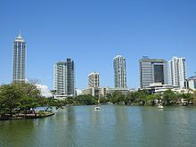

Economy of Sri Lanka
|  Colombo, the financial centre of Sri Lanka | |||||||||||||
| Currency | Sri Lankan rupee (LKR) (Rs// =) (රු) (ரூ) | ||||||||||||
|---|---|---|---|---|---|---|---|---|---|---|---|---|---|
| Calendar year | |||||||||||||
Trade organisations | WTO, WCO, SAFTA, IOR-ARC, SCO, BIMSTEC, AIIB and others | ||||||||||||
Country group |
| ||||||||||||
| Statistics | |||||||||||||
| Population | |||||||||||||
| GDP | |||||||||||||
| GDP rank | |||||||||||||
GDP growth |
| ||||||||||||
GDP per capita | |||||||||||||
GDP per capita rank | |||||||||||||
GDP by sector |
| ||||||||||||
| 2.4% (July 2024)[11] | |||||||||||||
Population below poverty line |
| ||||||||||||
| 37.7 medium (2019, World Bank)[13] | |||||||||||||
| |||||||||||||
Labour force | |||||||||||||
Labour force by occupation |
| ||||||||||||
| Unemployment |
| ||||||||||||
Main industries | textiles & clothing, tourism, telecommunications, information technology services, banking, shipping, petroleum refining, construction and processing of tea, rubber, coconuts, tobacco and other agricultural commodities | ||||||||||||
| External | |||||||||||||
| Exports |
| ||||||||||||
Export goods | textiles and apparel, tea and spices, electronics, IT services, rubber manufactures, fish, precious stones | ||||||||||||
Main export partners | |||||||||||||
| Imports | |||||||||||||
Import goods | Mineral fuels including petroleum product (12.3%) Machinery including computers (9%) Electrical machinery, equipment Vehicles (7.1%) Textile fabric (5%) Plastics (3.7%) Cotton (3.3%) Heavy metals (3%) Ships and boats (2.8%) Iron, steel, aluminium (2.8%) | ||||||||||||
Main import partners | |||||||||||||
FDI stock | |||||||||||||
Gross external debt | |||||||||||||
| Public finances | |||||||||||||
| −8.3% (of GDP) (2023)[26] | |||||||||||||
| Revenues | Rs 2,110,487 million(2023)[27] | ||||||||||||
| Expenses | Rs 3,732,331 million(2023)[27] | ||||||||||||
| |||||||||||||
| |||||||||||||
All values, unless otherwise stated, are in US dollars. | |||||||||||||
.jpg){kind=link}
The mixed economy of Sri Lanka was worth $84 billion by nominal gross domestic product (GDP) in 2019[32] and $296.959 billion by purchasing power parity (PPP).[33] The country had experienced an annual growth of 6.4 percent from 2003 to 2012, well above its regional peers. This growth was driven by the growth of non-tradable sectors, which the World Bank warned to be both unsustainable and unequitable. Growth has slowed since then. In 2019 with an income per capita of 13,620 PPP Dollars[34] or 3,852 (2019) nominal US dollars,[35][36] Sri Lanka was re-classified as a lower middle income nation with the population around 22 million (2021)[37] by the World Bank from a previous upper middle income status.[38]
Sri Lanka has met the Millennium Development Goal (MDG) target of halving extreme poverty and is on track to meet most of the other MDGs, outperforming other South Asian countries. Sri Lanka's poverty headcount index was 4.1% by 2016. Since the end of the three-decade-long Sri Lankan Civil War, Sri Lanka has begun focusing on long-term strategic and structural development challenges, and has financed several infrastructure projects.
High foreign debt, economic mismanagement under the governments of Gotabhaya and Mahinda Rajapaksa,[39] and lower tourism revenue led to the country defaulting on its sovereign debt in April 2022.[40] The economy contracted 7.8% in 2022, and the percentage of the population earning less than $3.65 a day doubled to around 25% of the population. On March 20, 2023, the IMF has loaned US$3 billion to the country as part of a 48-month debt relief program.[41]
Overview
[edit]Services accounted for 58.2% of Sri Lanka's economy in 2019 up from 54.6% in 2010, industry 27.4% up from 26.4% a decade earlier and agriculture 7.4%.[42] Though there is a competitive export agricultural sector, technological advances have been slow to enter the protected domestic sector.[43] Sri Lanka is the largest solid and industrial tyres manufacturing centre in the world and has an apparel sector which is moving up the value chain.[44] But rising trade protection over the past decade has also caused concern over the resurgence of inward looking policies.[45]
In services, ports and airports generate income for the country's newfound status as a shipping and aviation hub.[46] Port of Colombo is the largest transhipment hub in South Asia.[47] There is a growing software and information technology sector, which is competitive and is open to global competition.[48] Tourism is a fast expanding area. Lonely Planet named Sri Lanka the best destination to visit in 2019 and Travel+Leisure the best island.[49][50] Sri Lanka's top export destinations are the United States, United Kingdom and India. China, India and the UAE are the main import partners.[51]
With the onset of the COVID-19 pandemic, lingering concerns over Sri Lanka's slowing growth, money printing and government debt has spilled over into a series of sovereign rating downgrades.[52][53] Import controls and import substitution have intensified after heightened monetary instability coming from debt monetization.[54][55][56][57] Sri Lanka has been named among the top 10 countries in the world in its handling of the COVID-19 pandemic.[58] In 2021, the Sri Lankan Government officially declared the worst economic crisis in the country in 73 years.[59] Sri Lanka said most foreign debt repayments had been suspended from April 12, after two years of money printing to support tax cuts, ending an unblemished record of debt service.[60]
Economic history
[edit]Early history
[edit]Sri Lanka has a long history as a trading hub as a result of being located at the centre of east–west trade and irrigated agriculture in the hinterland, which is known from historical texts surviving within the island and from accounts of foreign travellers. The island has irrigation reservoirs called tanks built by ancient Kings starting after Indo-Aryan migration, many of which survive to this day.[61] They form part of an irrigation system interlinked with more modern constructions.[62]
Faxian (also Fa Hsien) a Chinese Monk who travelled to India and Sri Lanka around 400 AD, writes of existing legends at his time of merchants from other countries trading with native tribal peoples in the island before Indo-Aryan settlement. "The country which originally had no human inhabitants but was occupied by spirits and nagas (serpent worshipers) with which merchants of various countries carried on a trade," Faxian wrote in 'A Record of Buddhistic Kingdoms'.[63] He writes of precious stones and pearl fisheries with a 30% tax by the king.
The monk had embarked "in a large merchant vessel" from India to arrive in the island.[63] To go back to China he "took passage in a large merchantman on board which were more than 200 men", ran into a storm where the merchants were forced to throw part of the cargo overboard and arrived at Java-dvipa (Indonesia), showing Sri Lanka had active coastal and long distance maritime trade links.[64]
Cosmas Indicopleustes (Indian Voyager), a merchant/monk from Alexandria of Egypt, who visited the Indian sub-continent in the 6th century, wrote in detail about Sri Lanka as a centre of commerce, referring to the island as Taprobane and Sieladiba.
"The island being, as it is, in a central position, is much frequented by ships from all parts of India and from Persia and Ethiopia, and it likewise sends out many of its own," he wrote in Christian Topography. "And from the remotest countries, I mean Tzinista [China] and other trading places, it receives silk, aloes, cloves, sandalwood and other products, and these again are passed on to marts on this side, such as Male [Malabar or South West Indian coast] ... and to Calliana [Kalyana]... This same Sielediba then, placed as one may say, in the centre of the Indies and possessing the hyacinth [sapphire] receives ... and in turn exports to them, and is thus itself a great seat of commerce."[65]
Independence to 1977
[edit]Sri Lanka was ahead of many Asian nations and had economic and social indicators comparable to Japan when it gained independence from the British in 1948.
Sri Lanka's social indicators were considered "exceptionally high". Literacy was already 21.7% by the late 19th century. A Malaria eradication policy of 1946 had cut the death rate from 20 per thousand in 1946 to 14 by 1947. Life expectancy at birth of a Sri Lankan in 1948 at 54 years was just under Japan's 57.5 years. Sri Lanka's infant mortality rate in 1950 was 82 deaths per thousand live births, Malaysia 91 and Philippines 102.[66]
With its strategic location in the Indian Ocean Sri Lanka was expected to have a better chance than most other Asian neighbours to register a rapid economic take-off and had "appeared to be one of the most promising new nations." But the optimism in 1948 had dimmed by 1960, due to wrong economic policies and mismanagement.
East Asia was gradually overtaking Sri Lanka. In 1950 Sri Lanka's un-adjusted school enrolment ratio as a share of the 5-19 year age group was 54%, India 19%, Korea 43% and the Philippines 59%. But by 1979 Sri Lanka's school enrollment rate was 74%, but the Philippines had improved to 85% and Korea was 94%.[66]
Sri Lanka had inherited a stable macro-economy at independence.[67] A central bank was set up and Sri Lanka became a member of the IMF entering the Bretton Woods system of currency pegs on August 29, 1950.[68] By 1953 exchange controls were tightened with a new law.[69]
The economy was then progressively controlled and relaxed in response to foreign exchange crises as monetary and fiscal policies deteriorated. Controls and restrictions in 1961-64 were followed by partial liberalization in 1965–70. Controls were continued after a devaluation in the wake of 1967 Sterling Crisis. Controls were tightened from 1970 to 1977 alongside the collapse of the Bretton Woods system. "In sum it was a story of tightening partial relaxing, and again tightening the trade regime and associated areas to over a perceived foreign exchange crisis," writes economist Saman Kelegama in 'Development in Independent Sri Lanka what went wrong'. "In the early 1960s strategy for dealing with the foreign exchange crisis was the gradual isolation of the economy from external market forces. It was the beginning of a standard import-substitution industrial regime with all the controls and restrictions associated with such a regime. Expropriation and state intervention in economic activities was common."[67]
In 1960 Sri Lanka's (then Ceylon) per capita GDP was 152 dollars, Korea 153, Malaysia 280, Thailand 95, Indonesia 62, Philippines 254, Taiwan 149. But by 1978 Sri Lanka's per capita GDP was 226, Malaysia 588, Indonesia 370 and Taiwan 505.[66]
The 1970s also saw an uprising in the south from the JVP insurrection, and the roots of a civil war in the North and the East.
Post 1977 period
[edit]In 1977, Colombo abandoned statist economic policies and its import substitution industrialisation policy for market-oriented policies and export-oriented trade. Sri Lanka would after that be known to handle dynamic industries such as food processing, textiles and apparel, food and beverages, telecommunications, and insurance and banking. In the 1970s, the share of the middle class increased.[70]
Between 1977 and 1994 the country came under UNP rule in which under President J.R Jayawardana Sri Lanka began to shift away from a socialist orientation in 1977. Since then, the government has been deregulating, privatizing, and opening the economy to international competition. In 2001, Sri Lanka faced bankruptcy, with debt reaching 101% of GDP. The impending currency crisis was averted after the country reached a hasty ceasefire agreement with the LTTE and brokered substantial foreign loans. After 2004 the UPFA government has concentrated on the mass production of goods for domestic consumption such as rice, grain and other agricultural products.[71] however twenty-five years of civil war slowed economic growth,[citation needed] diversification and liberalisation, and the political group Janatha Vimukthi Peramuna (JVP) uprisings, especially the second in the early 1980s, also caused extensive upheavals.[72]
Following the quelling of the JVP insurrection, increased privatization, economic reform, and the stress on export-oriented growth helped improve economic performance, increasing GDP growth to 7% in 1993. By 1996 plantation crops made up only 20% of exports (compared with 93% in 1970), while textiles and garments accounted for 63%. GDP grew at an annual average rate of 5.5% throughout the 1990s until a drought and a deteriorating security situation lowered growth to 3.8% in 1996.
The economy rebounded in 1997–98 with a growth of 6.4% and 4.7% – but slowed to 3.7% in 1999. For the next round of reforms, the central bank of Sri Lanka recommends that Colombo expand market mechanisms in nonplantation agriculture, dismantle the government's monopoly on wheat imports, and promote more competition in the financial sector. Economic growth has been uneven in the ensuing years as the economy faced a multitude of global and domestic economic and political challenges. Overall, average annual GDP growth was 5.2% over 1991–2000.
In 2001, however, GDP growth was negative 1.4% – the first contraction since independence. The economy was hit by a series of global and domestic economic problems and was affected by terrorist attacks in Sri Lanka and the United States. The crises also exposed the fundamental policy failures and structural imbalances in the economy and the need for reforms. The year ended in parliamentary elections in December, which saw the election of United National Party to Parliament, while Sri Lanka Freedom Party retained the presidency.
During the short-lived peace process from 2002 to 2004, the economy benefited from lower interest rates, a recovery in domestic demand, increased tourist arrivals, a revival of the stock exchange, and increased foreign direct investment (FDI). In 2002, the economy experienced a gradual recovery. During this period Sri Lanka has been able to reduce defense expenditures and begin to focus on getting its large, public sector debt under control. In 2002, economic growth reached 4%, aided by strong service sector growth. The agricultural sector of the economy staged a partial recovery. Total FDI inflows during 2002 were about $246 million[73]
The Mahinda Rajapakse government halted the privatization process and launched several new companies as well as re-nationalising previous state-owned enterprises, one of which the courts declared that privatization is null and void.[74] Some state-owned corporations became overstaffed and less efficient, making huge losses with series of frauds being uncovered in them and nepotism rising.[75] During this time, the EU revoked GSP plus preferential tariffs from Sri Lanka due to alleged human rights violations, which cost about US$500 million a year.[76][77]
The resumption of the civil war in 2005 led to a steep increase defense expenditures. The increased violence and lawlessness also prompted some donor countries to cut back on aid to the country.[78][79]
A sharp rise in world petroleum prices combined with the economic fallout from the civil war led to inflation that peaked at 20%.[citation needed]
Post-civil war period
[edit]Pre-2009, there was a continuing cloud over the economy with the civil war and fighting between the Government of Sri Lanka and the LTTE; however, the war ended with a resounding victory for the Sri Lankan Government on 19 May 2009 with the total elimination of the LTTE.[citation needed]
As the civil war ended in May 2009 the economy started to grow at a higher rate of 8.0% in the year 2010 and reached 9.1% in 2012, mostly due to the boom in non-tradable sectors; however, the boom did not last and the GDP growth for 2013 fell to 3.4% in 2013, and only slightly recovered to 4.5% in 2014.[80][81][82][83]
According to government policies and economic reforms stated by Prime Minister and Minister of National Policy and Economic Affairs Ranil Wickremesinghe, Sri Lanka plans to create Western Region Megapolis a Megapolis in the western province to promote economic growth. The creation of several business and technology development areas island-wide specialised in various sectors, as well as tourism zones, are also being planned.[84][85][86][87] In the mid to late 2010s, Sri Lanka faced a danger of falling into economic malaise, with increasing debt levels and a political crisis which saw the country's debt rating being dropped.[88] In 2016 the government succeeded in lifting an EU ban on Sri Lankan fish products which resulted in fish exports to EU rising by 200% and in 2017 improving human rights conditions resulted in the European Commission proposing to restore GSP plus facility to Sri Lanka.[85][86][89][90] Sri Lanka's tax revenues per GDP also increased from 10% in 2014, which was the lowest in nearly two decades to 12.3% in 2015.[91] Despite reforms, Sri Lanka was listed among countries with the highest risk for investors by Bloomberg.[92] Growth also further slowed to 3.3% in 2018 and 2.3% in 2019.[93] The rupee fell from 131 to the US dollar to 182 from 2015 to 2019, inflating foreign debt and slowing domestic consumption ending a period of relative stability.[94] China became a top creditor to Sri Lanka over the last decade, overtaking Japan and the World Bank.[95]
The main economic sectors of the country are tourism, tea export, apparel, textile, rice production and other agricultural products. In addition to these economic sectors, overseas employment contributes highly in foreign exchange.[96]
{kind=link}
Inverted yield curve in the first half of 2022
{kind=link}
In early March 2022 the Sri Lankan Rupee began losing value quickly
As of the early 2020s, the debt-laden country is undergoing an economic crisis where locals are experiencing months of shortages of food, fuel and electricity. Inflation has peaked to 57% according to official data.[70] In April 2022, Sri Lanka declared a sovereign default.[97] In June 2022, Prime Minister Ranil Wickremesinghe declared in parliament the collapse of the Sri Lankan economy, leaving it unable to pay for essentials.[98]
Macroeconomic trends
[edit]The chart below summarizes the trend of Sri Lanka's gross domestic product at market prices.[99] by the International Monetary Fund with figures in millions of Sri Lankan Rupees.
| Year | Gross Domestic Product |
No. of Sri Lankan Rupees in $1 US |
|---|---|---|
| 1980 | 66,167 | 16.53 |
| 1985 | 162,375 | 27.20 |
| 1990 | 321,784 | 40.06 |
| 1995 | 667,772 | 51.25 |
| 2000 | 1,257,637 | 77.00 |
| 2005 | 2,363,669 | 100.52 |
| 2016 | 6,718,000 | 145.00 |
| 2020 | 14,601,600 | 189.00 |
For purchasing power parity comparisons, the US Dollar is exchanged at 113.4 Sri Lankan Rupees only.
The following table shows the main economic indicators from 1980 to 2020.[100]
| Year | GDP (in US$ billions) |
GDP per capita in US$ |
GDP growth (real) |
Inflation (in percent) |
Government debt (Percentage of GDP) | ||
|---|---|---|---|---|---|---|---|
| PPP | Nominal | PPP | Nominal | ||||
| 1980 | 16.58 | 4.02 | 1,135 | 267 | 5.8% | 26.1% | 78% |
| 1985 | 27.43 | 5.97 | 1,772 | 369 | 5.0% | 1.5% | 95% |
| 1990 | 37.74 | 8.03 | 2,320 | 463 | 6.2% | 21.5% | 82% |
| 1995 | 56.28 | 13.03 | 3,257 | 714 | 6.1% | 7.7% | 80% |
| 2000 | 83.03 | 16.33 | 4,496 | 869 | 8.4% | 6.2% | 82% |
| 2005 | 112.59 | 24.41 | 5,739 | 1,248 | 6.2% | 11.0% | 79% |
| 2006 | 124.94 | 28.28 | 6,319 | 1,435 | 7.7% | 10.0% | 77% |
| 2007 | 136.99 | 32.35 | 6,874 | 1,630 | 6.8% | 15.8% | 74% |
| 2008 | 147.99 | 40.71 | 7,309 | 2,037 | 6.0% | 9.6% | 71% |
| 2009 | 154.39 | 42.07 | 7,540 | 2,090 | 3.5% | 3.4% | 75% |
| 2010 | 168.80 | 56.73 | 8,164 | 2,799 | 8.0% | 6.3% | 72% |
| 2011 | 186.76 | 65.29 | 8,949 | 3,200 | 8.4% | 6.7% | 71% |
| 2012 | 207.60 | 68.43 | 10,164 | 3,350 | 9.1% | 7.5% | 70% |
| 2013 | 218.11 | 74.32 | 10,599 | 3,610 | 3.4% | 6.9% | 72% |
| 2014 | 233.01 | 79.36 | 11,220 | 3,819 | 5.0% | 2.8% | 72% |
| 2015 | 247.37 | 80.60 | 11,798 | 3,843 | 5.0% | 2.2% | 78% |
| 2016 | 261.72 | 82.40 | 12,343 | 3,886 | 4.5% | 4.0% | 80% |
| 2017 | 274.72 | 87.42 | 12,811 | 4,076 | 3.1% | 6.5% | 79% |
| 2018 | 285.37 | 87.95 | 13,169 | 4,058 | 3.8% | 3.8% | 84% |
| 2019 | 297.01 | 83.98 | 13,622 | 3,851 | 4.1% | 2.7% | 87% |
| 2020 | 289.88 | 80.71 | 13,225 | 3,682 | -2.4% | 3.4% | 101% |
Trade statistics
[edit]| Year | Totals of Merchandise & Services [101] (in bn. US$) | |
|---|---|---|
| Export revenue | Imports | |
| 2016 | ||
| 2017 | ||
| 2018 | ||
| 2019 | ||
| 2020 | ||
| 2021 | ||
| 2022 | ||
Largest trading partners with Sri Lanka
[edit]Exports $10.3 billion (2020)[106]
Imports $14.9 billion (2020)[107]
| Rank | Country | Exports | Imports | Total Trade | Trade Balance |
|---|---|---|---|---|---|
| 1 | 2,560 | 355 | 2,915 | 2,205 | |
| 2 | 793 | 167 | 960 | 626 | |
| 3 | 668 | 3,220 | 3,888 | −2,552 | |
| 4 | 651 | 269 | 978 | 382 | |
| 5 | 432 | 246 | 678 | 186 | |
| 6 | 305 | 90.9 | 395.9 | 214.1 | |
| 7 | 285 | 37.7 | 322.7 | 247.3 | |
| 8 | 256 | 3,820 | 4,076 | −3,564 | |
| 9 | 225 | 177 | 402 | 48 | |
| 10 | 200 | 376 | 576 | −176 |
Economy
[edit]Sovereign Debt Crisis 2022
[edit]After two years of money printing and tax cuts made for fiscal and monetary stimulus, Sri Lanka declared a 'pre-emptive negotiated default' saying most foreign debt would not be repaid from April 12 [108] Fitch Ratings downgraded Sri Lanka to 'C' from 'CC' and said the country would be further downgraded to restricted default (RD) once the first payment was missed.[109] Standard and Poor's downgraded the sovereign rating to 'CC' and said the country would be downgraded to selective default (SD) after a payment was missed.[110]
GDP growth 2021 and projections for 2022
[edit]2020: -4, 2021: 4, 2022(f) 3 IMF
Sri Lanka's economy could grow 3% in 2022, the International Monetary Fund has said while warning that risk were on the downside and the economy could implode with trade contractions and monetary instability money printing (central bank credit) continued.[111][112] In 2021 Sri Lanka grew 4% amid though excessive central bank financing had led to balance of payments deficits and foreign exchange shortages.[113][114] Despite progress in managing Coronavirus, external debt remains a challenge amid concerns over money printing under Modern Monetary Theory independent economists had warned earlier.[115] The central bank has said the economy is managed in an alternative way.[114] The country's public and publicly guaranteed debt could rise to 115% in 2021 and poverty could worsen, the World Bank has warned.[116]
Sri Lanka's gross domestic product contracted 4% in 2020 due to the government response to the Coronavirus pandemic which was higher than the previous contraction reported in 2001, on top of several years of slow growth and depreciation of the currency. Sri Lanka was making a strong recovery after lockdowns ended in May 2020 but a new outbreak of Coronavirus slowed exports and industry.[117] The International Monetary Fund initially projected a 4.6-pct contraction for 2020.[118]
In the second quarter of 2020, Sri Lanka's GDP was estimated to have contracted by 16% the biggest quarterly fall on record and expanded by 2% in the third quarter. In the first nine months of the year, GDP was estimated to have contracted 5%.[119]
After growing 5.0% in 2015, growth fell to 4% in 2016, 4% in 2017, 3% in 2018 and 2% in 2019.[120]
The economy suffered a series of shocks in the form of a currency crisis which brought an International Monetary Fund program in 2016, political instability in 2018 combined with a second currency crisis and suicide bombings by an Islamist extremist group on Easter Sunday 2019.[121][122]
Fiscal Developments
[edit]Budget deficit 2019: -6.8%/9.4%, 2020:11.1%/14%, 2021f: -9.4%
Sri Lanka is expecting a budget deficit of 9.4% of GDP in 2021 after the nominal output for the year was revised down following a Coronavirus pandemic in 2020.[123] A budget submitted to parliament originally expected a deficit of 8.9% in 2021 with a Coronavirus pandemic slowing growth, compounded by tax cuts.[124] Concerns were raised that the targets were too ambitious given Coronavirus pandemic uncertainties as well as global economic weakness with Fitch Ratings projecting a deficit of 11.5%.[125]
The Finance Ministry has countered saying a lower interest bill, a gradual recovery in 2021, and stronger foreign direct investments to the Port City will strengthen economic activity and state finances. The Treasury also hopes to borrow more domestically instead of from abroad.[126]
Sri Lanka's national debt has been gradually rising amid weak growth and policy gridlock. Following the steep rise in the deficit in 2020, central government debt rose to 101% of GDP.[123] The debt to GDP ratio rose to 86.8% in 2019 from 77.9% in 2017.[127]
Budget deficit data controversy
Sri Lanka's Ministry of Finance in 2020 changed its cash-basis accounting convention and charged some payment arrears to the previous year, reporting an 11.1% of GDP deficit for 2020 and revising up the 6.8 deficit in 2019 to 9.6%.[123] Sri Lanka's main opposition charged that it was accounting fraud since arrears are always charged to the year it was paid under the country's cash-basis accounting convention. The deficit that was financed in 2020 was 14.0% of GDP.[128] A Sri Lanka-based fact-checking portal, FactCheck.lk said the shift in numbers to 2019 "cannot be validated by an accounting standard."[129]
Credit rating and commercial borrowing
Sri Lanka applied for credit ratings from international agencies in its efforts to apply for loans from international markets in 2005 after the election of Mahinda Rajapakse as president. Standard and Poor's gave Sri Lanka a "B+" speculative rating, four levels below investment grade and Fitch "BB−", three grades below investment grade. Standard and Poor's maintained Sri Lanka was constrained by providing widespread subsidies, a bloated public sector, transfers to loss-making state enterprises, and high interest local and international burdens [1]. Standard and Poor's estimates public sector debt has reached 95% of GDP [2], in comparison to CIA estimates of 89% of GDP [3]. Sri Lanka in mid-2007 sought to borrow $500 million from international markets to shore up the deteriorating exchange rate and reduce pressure on repayment of the domestic debt market [4]. The head of the opposition UNP, Ranil Wickremasinghe has warned that such intense borrowing is unsustainable and will not repay these loans if elected to power [5]. Sri Lanka's credit rating was progressively downgraded following a series of currency crises and output shocks. In December 2018 Fitch downgraded Sri Lanka to 'B' [130] and in April 2020 to 'B−' amid a global Coronavirus pandemic.[131] Moody's downgraded Sri Lanka to Caa1 in September 2020,[53] which was disputed by the Finance Ministry.[132] In November 2020, Fitch Ratings also downgraded Sri Lanka to CCC citing fiscal and external concerns.[52] In December 2020, Standard and Poor's followed, downgrading to 'CCC+', citing high fiscal deficits and excessive domestic liquidity, which was also protested by the Finance Ministry.[133]
Investments
Sri Lanka's investment-to-GDP ratio is around 31%, made up of about 24% private and 5% public investment. The private savings rate is about 24% and the government is a net dis-saver leaving a domestic savings investment gap of around 7% of GDP. In 2019 investment fell to 27.4% of GDP from 30.4% a year earlier with the domestic savings rate also falling to 21.3% of GDP from 23%.[134] Sri Lanka's savings rate is undermined by government dis-saving (the revenue deficit), which rose from 1.2 to 2.7% in 2019.[127]
There are attempts to improve Sri Lanka's "Ease of Doing Business index' (Sri Lanka stood at 111 for 2018 down from 85th in 2014) and the overall tariff structure. In 1992, Sri Lanka's exports were on par with countries like Vietnam and Bangladesh (at US$2bn), which has only grown to US$12bn by the end of 2017 compared to Vietnam's US$214bn and Bangladesh's US$36bn for 2017.
Inflation in 2021
[edit]Colombo Consumer price inflation 2020 : 4.2% April 2021 : 3.9%
Inflation in Sri Lanka measured by the Colombo Consumer Price Index grew 6.0% in the 12-months to August 2021 picking up from 5.7 percent in July.[135] Inflation was 4.2% in the year to December 2020. In 2019 inflation was 4.8 percent.[136]
The Department of Census Statistics also compiles a National Consumer Price Index which is released with a delay. Inflation measured by the NCPI increased to 6.8% in July 2021 from 6.1% in June 2021, higher than the central bank's target rate[137]
Sri Lanka's central bank is targeting inflation at 4-6 per cent in 2021, though the policy will be loose to promote growth. "The Central Bank is of the view that continued support through monetary and fiscal interventions is essential to provide adequate impetus to the economy amidst the challenging domestic and global macroeconomic conditions," Governor W D Lakshman said in January 2021. "Therefore, the Central Bank will continue the prevailing accommodative monetary policy stance in 2021 to ensure the envisaged recovery of economic activity. The Central Bank will continue to remain vigilant but is confident that inflation will remain within the targeted range of 4-6 per cent over the medium-term.[138] But after worsening balance of payments trouble and inflation, rates were hiked in August and the statutory reserve ratio was also raised.[139]
Sri Lanka used a 'flexible inflation targeting' framework for monetary policy at least until 2019. In 2020 growth took a priority, Governor Lakshman has said as efforts are made to boost output amid a COVID-19 pandemic.[140] Sri Lanka suffered a US$3.2bn balance of payments deficit in 2020 amid monetary easing.[141]
Interest rates – 1 year T bill market rate by June 2019
[edit]12 Month T bill to be at 10% by 30 June 2019
[edit]The CBSL has reduced its T bill holding significantly from April 2017 to date reversing any monetary stimulated inflationary actions. Thus the resultant liquidity levels in the money market broadly reflect natural market conditions compared to the market that was there a year ago, which reflected more realistic banking sector interest rates as of June 2018. Private sector credit growth declined from high levels of 29% YoY in July 2016 to 15% YoY levels in 1Q2018.
Given the changes taking place in the private credit space (i.e. the retail tilt), and provided the CBSL's recent policy rate cut in April 2018, credit growth may still continue to move either horizontally (i.e. at a 15% level) or continue to reduce slightly given anticipated near term inflationary pressures, as the consumption-led borrowings may also tend to decline on account of the anticipated reduction in near term disposable income. This will however not add any excessive upward pressures on interest rates (including 12-month T bill yields), especially during 2H2018E. As a result, 12-month Treasury bill yields may in fact slightly decline from its June 2018 --> 9.4% to 9% levels by the end of 2018E. However, given the International Sovereign Bond (ISB) bullet payments >US$3bn p.a. commencing from 2019E may likely add some upward pressure on interest rates, resulting in the 12-month T bill yields rising to at least 10% by 30 June 2019.
External sector
[edit]Trade account issues
[edit]In the recent past, the Sri Lankan Government has identified some key focal areas to address the external imbalances of the economy, especially with regard to reducing its high trade deficit (≈15% of GDP for 2012) in order to make the economy comply with the Marshall–Lerner condition. Sri Lanka's oil import bill accounts for an estimated 27% of total imports while its pro-growth policies have resulted in an investment goods import component of 24% of total imports. These inelastic import components have led to Sri Lanka's Export goods price elasticity + Import goods price elasticity totalling less than 1, resulting in the country not complying with the Marshall–Lerner condition.
Some of the suggested proposals include:
- Import substitution of investment goods and consumer goods
- Tax concessions towards value-added exports
- Negotiating longer credit periods for oil imports
- Allowing the external value of the currency to be determined by market forces (with minimal central bank intervention)
Capital account
[edit]- Within the capital account, borrowings still account for a significant proportion as opposed to Foreign direct investments
- FDIs were estimated at ~US$800mn for FY2012
Overall balance (BOP)
[edit]- The economy ended with an overall positive balance of US$151mn for 2012 (vs. a US$1,061mn deficit in FY2011)[142]
Financial institutions
[edit]{kind=link}
The Central Bank of Sri Lanka is the monetary authority of Sri Lanka and was established in 1950. The Central Bank is responsible for the conduct of monetary policy in the country and also has supervisory powers over the financial system.[143]
The Colombo Stock Exchange (CSE) is the main stock exchange in Sri Lanka. It is one of the most modern exchanges in South Asia, providing a fully automated trading platform. The vision of the CSE is to contribute to the wealth of the nation by creating value through securities. The headquarters of the CSE has been located at the World Trade Center Towers [6] in Colombo since 1995 and it also has branches across the country in Kandy, Matara, Kurunegala, Negombo and Jaffna.[144] In 2009, after the 30 years-long civil war came to an end, the CSE was the best performing stock exchange in the world.
Economic infrastructure and resources
[edit]Transportation and roads
[edit]{kind=link}
Most Sri Lankan cities and towns are connected by the Sri Lanka Railways, the state-run railway operator. The Sri Lanka Transport Board is the state-run agency responsible for operating public bus services across the island.
The government has launched several highway projects to bolster the economy and national transport system, including the Colombo-Katunayake Expressway, the Colombo-Kandy (Kadugannawa) Expressway, the Colombo-Padeniya Expressway and the Outer Circular Highway to ease Colombo's traffic congestion. The government-sponsored Road Development Authority (RDA) has been involved in several large-scale projects all over the island in an attempt to improve the road network in Sri Lanka. Sri Lanka's commercial and economic centres, primarily the capitals of the nine provinces are connected by the "A-Grade" roads which are categorically organised and marked. Furthermore, "B-Grade" roads, also paved and marked, connect district capitals within provinces. The grand total of A, B and E grade roads are estimated at 12,379.49 km.[145]
Energy
[edit]{kind=link}
The energy policy is governed by the Ministry of Power and Energy, while the production and retailing of electricity is carried out by the Ceylon Electricity Board. Policy recommendations and planning come under the oversight of the Public Utilities Commission of Sri Lanka. Energy in Sri Lanka is mostly generated by hydroelectric power stations in the Central Province.[146][147]
Skilled Labor
[edit]Sri Lanka has a well-established education system that has successfully created a vast supply of skilled labour. Sri Lanka's population has a literacy rate of 92%, higher than that expected for a developing country; it has the highest literacy rate in South Asia and overall, one of the highest literacy rates in Asia.[148] Information technology Archived 19 September 2020 at the Wayback Machine literacy of the urban sector population is also satisfactory at 39.9 per cent and people around the country use web-based job boards to find skilled employment together with other sources such as newspapers and government gazette. In Sri Lanka, all persons above the age limit 15 years and above of either gender are identified as the working-age population.[149] In the fourth quarter of 2017, Sri Lanka had an unemployment rate of 4.2 percent[150] and is shown to reduce gradually over the years.
Economic sectors
[edit]Tourism
[edit]{kind=link}
Tourism is one of the main industries in Sri Lanka. Major tourist attractions are focused around the island's famous beaches located in the southern and the eastern parts of the country and ancient heritage sites located in the interior of the country and resorts located in the mountainous regions of the country.[151][152] Also, due to precious stones such as rubies and sapphires being frequently found and mined in Ratnapura and its surrounding areas, they are a major tourist attraction.[153]
The 2004 Indian Ocean Tsunami[154] and the past civil war have reduced the tourist arrivals, as a civil war intensified.[155] Foreign visitors fell from 566,202 in 2004 during a ceasefire with Tamil Tiger separatists to 447,890 by the end of the war in 2009. From then arrivals grew rapidly to 2,333,796 in 2019. The 2019 Easter Sunday bombings reduced arrivals to 1,913,702 though authorities acted quickly to round up the group and travel advisories were relaxed by key generating markets such as the UK as early as June 2019.[156][157] Lonely Planet named Sri Lanka the best destination to visit in 2019 and Travel+Leisure the best island.[49][50]
The COVID-19 pandemic dealt a major blow to the industry after airports were closed in March 2020. Tourism revenues were estimated to have fallen to US$956mn in 2020 from US$3.6bn in 2020 hurting over 300,000 said to be connected to the industry.[158] The government has announced a number relief measures including a debt moratorium, which were then extended.[159][160] In 2020 arrivals fell 70 percent to 507,704 from 1,913,702 in 2019, with almost all arrivals coming before airports closed in March.[161] In December 2020, under what was called a 'pilot project' 393 package tourists came to Sri Lanka on a charter flights from Ukraine. On January 21 tourism resumed officially allowing independent travellers to also come subject to a series of health rules and Coronavirus tests.[162]
Tea industry
[edit]{kind=link}
{kind=link}
The tea industry, operating under the Ministry of Public Estate Management and Development, is one of the main industries in Sri Lanka. It became the world's leading exporter in 1995 with a 23% share of global tea export, higher than Kenya's 22% share. The central highlands of the country have a low-temperature climate throughout the year and annual rainfall and humidity levels that are suitable for growing tea. The industry was introduced to the country in 1867 by James Taylor, a British planter who arrived in 1852.[163]
Recently, Sri Lanka has become one of the countries exporting fair trade tea to the UK and other countries. It is believed that such projects could reduce rural poverty.[164][165]
Apparel and textile industry
[edit]The apparel industry of Sri Lanka mainly exports to the United States and Europe.[166] There are about 900 factories throughout country serving companies such as Victoria's Secret, Liz Claiborne and Tommy Hilfiger.[167] Textiles & Apparels, as categorized and reported by the Sri Lanka Export Development Board, made up to around 44% of Sri Lankan merchandise exports, in the year 2017.[168]
Agriculture
[edit]The agricultural sector of the country produces mainly rice, coconut and grain, largely for domestic consumption and occasionally for export. The tea industry which has existed since 1867 is not usually regarded as part of the agricultural sector, which is mainly focused on export rather than domestic use in the country.[169]
Sri Lanka's agricultural and agri-allied manufacturing is likely affected by climate variations. There was a flood in May 2018 followed by floods in May 2016 and May 2017.
Transition to biological agriculture
[edit]In June 2021, Sri Lanka started the first 100% organic farming or biological agriculture program and imposed a countrywide ban on inorganic fertilizers and pesticides. The program was welcomed by its advisor Vandana Shiva,[170] but ignored critical voices from scientific and farming community who warned about possible collapse of farming,[171][172][173][174][175] including financial crisis due to devaluation of national currency pivoted around tea industry.[171] In the autumn of 2021 Sri Lanka experienced a massive drop in farming output by up to 50% and food shortages. The situation in the tea industry was described as critical, with farming under the organic program being described as 10x more expensive and producing half of the yield by the farmers.[176] In September 2021 the government announced "economic emergency", as the situation was further aggravated by falling national currency exchange rate, inflation rising as result of high food prices, and pandemic restrictions in tourism which further decreased country's income.[177][178][179][180] The government cancelled some of these measures, but importing urea remains banned.[181] Sri Lanka is seeking to introduce peacetime rationing of essential goods.[179]
In mid-October 2021 the ban was largely lifted "until the island was able to produce enough organic fertiliser".[182] In November 2021, Sri Lanka abandoned its plan to become the world's first organic farming nation following rising food prices and weeks of protests against the plan.[183] As of December 2021, the damage to the agricultural production was already done, with prices having risen substantially for vegetables in Sri Lanka, and time needed to recover from the crisis. The ban on fertilizer has been lifted for certain crops, but the price of urea has risen internationally due to the price for oil and gas.[184] Jeevika Weerahewa, a senior lecturer at the University of Peradeniya, predicted that the ban would reduce the paddy harvest in 2022 by an unprecedented 50%.[185]
IT industry
[edit]The export revenue from the Sri Lankan IT sector was US$1,089 million in 2019.[186]
Mining
[edit]Sri Lanka is known for producing a variety of gemstones, including chrysoberyl, corundum, garnet, ruby, spinel, and tourmaline, and is the leading producer of the Ceylon Blue sapphire. Ceylon sapphires are among the most desirable in the gemstone market and can regularly fetch thousands per carat. Contrary to popular belief Ceylon produces sapphires of all colours,[187] including padparascha types, though blue is the most desirable and yields the highest prices. Some of the world's largest sapphires, such as the Logan Sapphire and Blue Belle of Asia, have come from Sri Lanka.
The best-known areas for gemstone mining in Sri Lanka were Balangoda, Elahera, Kamburupitiya, Moneragala, Okkampitiya, and Ratnapura. In addition, Sri Lanka has a variety of industrial minerals, which include ball clay, kaolin, and other clays, calcite, dolomite, feldspar, graphite, limestone, Ilmenite, mica, rutile mineral sands, phosphate rock, quartz, zircon, dolomite and silica sand. Pulmoddai beach sand deposit is the most important non-ferrous mineral reserve in Sri Lanka as well as one of the world's most richest mineral sand deposits with heavy mineral concentrates of 50% to 60% and contains many minerals including titanium.[188][189][190]
Sri Lanka is famous, especially for its highly valued and high-purity vein graphite. As of 2014, graphite was produced at the two largest graphite mines in Sri Lanka, the Bogala and the Kahatagaha Mines. Major investors in graphite mining are Graphite Lanka Ltd., Bogala Graphite Lanka Plc, Bora Bora Resources Ltd. (BBR) of Australia, MRL Corp. Ltd. of Australia, and Saint Jean Carbon Inc. of Canada.[191][188]
Major companies
[edit]Sri Lanka has developed several multi-national companies and international brands. The most notable conglomerate include Cargills, JKH, Hayleys, LOLC Holdings,Carson Cumberbatch . The largest apparel companies are MAS Holdings, Brandix. While LAUGFS Holdings is a notable company in the energy sector. A well-known hospitality conglomerate is Aitken Spence. Dilmah and Island Tea are both a well known tea brand. While consumer goods brands include Ceylon Tobacco Company, Elephant House, DCSL, CBL, Maliban and GRI Tires.
Global economic relations
[edit]Exports to the United States, Sri Lanka's most important market, were valued at $1.8 billion in 2002, or 38% of total exports. For many years, the United States has been Sri Lanka's largest market for garments, receiving more than 63% of the country's total garment exports. India is Sri Lanka's largest supplier, with imports worth $835 million in 2002. Japan, traditionally Sri Lanka's largest supplier, was its fourth-largest in 2002 with exports of $355 million. Other important suppliers include Hong Kong, Singapore, Taiwan, and South Korea. The United States is the 10th-largest supplier to Sri Lanka; US imports amounted to $218 million in 2002, according to Central Bank trade data.
A new port is being built in Hambantota in Southern Sri Lanka, funded by the Chinese government as a part of the Chinese aid to Sri Lanka. This will ease the congestion in Sri Lankan ports, particularly in Colombo. In 2009, 4456 ships visited Sri Lankan ports.
Trade agreements
[edit]| Effective[192] | Under negotiation |
|---|---|
|
|
Foreign assistance
[edit]Sri Lanka is highly dependent on foreign assistance, and several high-profile assistance projects were launched in 2003. The most significant of these resulted from an aid conference in Tokyo in June 2003; pledges at the summit, which included representatives from the International Monetary Fund, World Bank, Asian Development Bank, Japan, the European Union and the United States, totalled $4.5 billion.
Debt and IMF assistance
[edit]During the years before 2016, the country's debt has soared as it was developing its infrastructure to the point of near bankruptcy which required a bailout from the International Monetary Fund (IMF). "Without an IMF loan, Sri Lanka would have been in a precarious position" in May 2016, according to Krystal Tan, an Asia economist at Capital Economics, who added, "foreign exchange reserves only covered around 80 per cent of short-term external debt."[194] The IMF had agreed to provide a $1.5 billion bailout loan in April 2016 after Sri Lanka provided a set of criteria intended to improve its economy.
By the fourth quarter of 2016, the debt was estimated to be $64.9 billion. Additional debt had been incurred in the past by state-owned organizations and this was said to be at least $9.5 billion. Since early 2015, domestic debt has increased by 12 per cent and external debt by 25 per cent.[195]
In late 2016 the World Bank provided US$100 million in financing and the Japan International Cooperation Agency provided a US$100M loan, both intended to "provide budget financing and to support reforms in competitiveness, transparency, public sector and fiscal management", according to the World Bank. The bank also reported that the country's government had agreed that there was a need for reforms "in the areas of fiscal operations, competitiveness and governance" and if fully implemented, "these could help the country reach Upper Middle-Income status in the medium term" according to the bank.[196]
In November 2016, the International Monetary Fund reported that it would disburse a higher amount than the US$150 million originally planned, a full US$162.6 million (SDR 119.894 million), to Sri Lanka. The agency's evaluation was cautiously optimistic about the future: "While inflation has abated, credit growth remains strong. The central bank indicates its readiness to tighten the monetary policy stance further if inflationary pressures resurge or credit growth persists. The authorities intend to continue building up reserves through outright purchases while allowing for greater exchange rate flexibility. The banking sector is currently well capitalized. Steps are being taken to find a resolution mechanism for the distressed financial institutions. Going forward, there is a need to strengthen the supervisory and regulatory framework, and identify and mitigate vulnerabilities in the financial sector, particularly with regard to non-banks and state-owned banks."[197]
As part of the debt management program, the Sri Lankan government carried out several reforms which included the implementation of a new Inland Revenue Act as well as an automatic fuel pricing formula. Tax reforms also increased VAT rates and narrowed exemptions and the third review by the IMF noted that performance was on track regarding fiscal consolidation, revenue mobilization, monetary policy management, and reserves accumulation. In the fourth review in June 2018, the IMF claimed that "Sri Lanka has made important progress under its Fund-supported program", but stressed the need for further progress with revenue-based fiscal consolidation and a prudent monetary policy with sustained efforts to build up international reserves. In 2018 China extended a loan of $1.25 billion consisting of a below-market-rate syndicated loan and smaller Panda bond to bail out Sri Lanka.[198][199][200]
In 2021, Bangladesh agreed to give Sri Lanka loans of at least $200 million from the foreign exchange reserves under a currency swap deal. The currency swap initiative was taken after Sri Lankan Prime Minister Mahinda Rajapaksa’s visit to Bangladesh to attend the joint celebrations of the golden jubilee of Bangladesh's independence and the birth centenary of Bangabandhu.[citation needed] In December 2021, Sri Lanka announced that it would pay off a $251 million oil debt to Iran by sending $5 million worth of Ceylon tea every month.[201][202] A strong and credible structural reform program is critical to avoid a prolonged crisis and address the (above) root causes of the current economic difficulties.[203] As the country struggled, locked in the throes of the crisis, India extended multi-pronged assistance of about USD 4 billion in 2022 through multiple credit lines and currency support, in line with India's 'Neighborhood First' policy.[7]
See also
[edit]- List of companies of Sri Lanka
- Central Bank of Sri Lanka
- 2019–present Sri Lankan economic crisis
- Colombo Stock Exchange
References
[edit]- ^ "World Economic Outlook Database, April 2019". IMF.org. International Monetary Fund. Retrieved 29 September 2019.
- ^ "World Bank Country and Lending Groups". datahelpdesk.worldbank.org. World Bank. Retrieved 1 July 2020.
- ^ "Mid-year Population, Births, Deaths and Net Migration". lankastatistics.com. Retrieved 14 June 2024.
- ^ "Mid-Year Population Web Release - September, 2023" (PDF). Dept of Census and Statistics. Archived from the original (PDF) on 14 June 2024. Retrieved 14 June 2024.
- ^ "GDP (current US$) - Sri Lanka". www.worldbank.org. Retrieved 25 July 2024.
- ^ "GDP, PPP (current international $) - Sri Lanka". worldbank.org. Retrieved 25 July 2024.
- ^ "Macroeconomic Outlook" (PDF). www.cbsl.gov.lk. Retrieved 14 June 2023.
- ^ "GDP per capita (current US$) - Sri Lanka". worldbank.org. Retrieved 25 July 2024.
- ^ "GDP per capita, PPP (current international $) - Sri Lanka". worldbank.org. Retrieved 25 July 2024.
- ^ "Consumer Price Inflation". www.cbsl.gov.lk. Retrieved 1 August 2024.
- ^ "Sri Lanka's Economy Shows Signs of Stabilization, but Poverty to Remain Elevated". World Bank. 2 April 2024.
- ^ "GINI index (World Bank estimate)". data.worldbank.org. World Bank. Retrieved 14 July 2024.
- ^ a b "Human Development Report 2023/2024" (PDF). United Nations Development Programme. 13 March 2024. Archived (PDF) from the original on 13 March 2024. Retrieved 29 May 2024.
- ^ "Labour Force, Labour Force Participation, Unemployment". lankastatistics.com. Central Bank of Sri Lanka. Retrieved 15 June 2024.
- ^ "Labour Force, Labour Force Participation, Unemployment". lankastatistics.com. Central Bank Of Sri Lanka. Retrieved 15 June 2024.
- ^ "Labour Force Participation" (PDF). www.cbsl.gov.lk. Retrieved 30 May 2024.
- ^ "Unemployment of Sri Lanka". www.cbsl.gov.lk. Retrieved 30 May 2023.
- ^ "SRI LANKA'S EXPORT PERFORMANCE IN DECEMBER 2023". www.srilankabusiness.com. Retrieved 4 June 2024.
- ^ a b c "Expo News, Page No. 08, Major Export Partners of Sri Lanka" (PDF). Retrieved 29 April 2021.
- ^ "EXTERNAL TRADEImports" (PDF). www.cbsl.gov.lk. Retrieved 25 April 2024.
- ^ "Sri Lanka FDI slows to US$528mn up to Sept 2020". Economynext. 20 February 2021. Retrieved 21 February 2021.
- ^ "The World Factbook". CIA.gov. Central Intelligence Agency. Archived from the original on 12 June 2007. Retrieved 16 March 2019.
- ^ "Sri Lanka current account in US$1.6bn surplus in 2023". economynext.com. Economynext. April 2024. Retrieved 30 May 2024.
- ^ "Sri Lanka foreign debt slightly down in March quarter, rupee debt up". EconomyNext. 3 June 2024.
- ^ "Sri Lanka budget deficit down in 2023, tax revenue up 54-pct". economynext.com. EconomyNext. Retrieved 30 May 2023.
- ^ a b "Fiscal Management Report 2024". www.treasury.gov.lk. Ministry of Finance. Retrieved 30 May 2024.
- ^ "Sri Lanka downgraded to CC by S&P, on track for selective default". Economynext.com. 13 April 2022. Retrieved 17 April 2022.
- ^ "Moody's downgrades Sri Lanka's ratings to Caa1, outlook changed to stable". Moodys.com. Moody's. 28 September 2020. Retrieved 12 December 2020.
- ^ "Fitch downgrades Sri Lanka to C". Fitchratings.com. Fitch Ratings. Retrieved 17 April 2022.
- ^ "External Sector Performance June 2024". Central Bank Of Sri Lanka. 1 August 2024.
- ^ "Annual Report 2019". cbsl.gov.lk. Central Bank of Sri Lanka. Retrieved 28 November 2020.
- ^ "GDP PPP (current international $) - Sri Lanka". worldbank.org. World Bank. Retrieved 4 December 2020.
- ^ "GDP perc apita PPP (current international $) - Sri Lanka". worldbank.org. World Bank. Retrieved 4 December 2020.
- ^ "World Bank and Sri Lanka -2019". worldbank.org. World Bank. Retrieved 28 November 2020.
- ^ "Enhancing competitiveness in Sri Lanka June 2016" (PDF). World Bank. Retrieved 9 March 2021.
- ^ "Population, total - Sri Lanka | Data". data.worldbank.org. Retrieved 8 March 2023.
- ^ "Sri Lanka downgraded to World Bank lower middle income country as per capita income falls". EconomyNext. Retrieved 28 November 2020.
- ^ "Sri Lanka: Rajapaksa brothers among 13 leaders responsible for crisis". 15 November 2023. Retrieved 25 January 2024.
- ^ "What Can We Learn from Sri Lanka's Debt Default?". South Asia@LSE. 16 October 2023. Retrieved 25 January 2024.
- ^ "IMF Executive Board Completes the First Review Under the Extended Fund Facility Arrangement with Sri Lanka". IMF. Retrieved 25 January 2024.
- ^ "Box Story - Adoption of Modern Technologies in Agriculture - Box Story 04, Central Bank Annual Report 2019" (PDF). www.cbsl.gov.lk. Central Bank of Sri Lanka. Retrieved 8 February 2021.
- ^ "Solid Tyres from Sri Lanka". www.srilankabusiness.com. Sri Lanka Export Development Board. Retrieved 8 February 2021.
- ^ Athukorale, Prema-chandra. "Sri Lanka's Trade Policy: Reverting to Dirigisme?" (PDF). acde.crawford.anu.edu.au. Crawford School of Public Policy ANU College of Asia and the Pacific. Archived (PDF) from the original on 24 April 2018. Retrieved 8 February 2021.
- ^ "The importance of Air Transport to Sri Lanka - IATA". www.iata.org. International Air Transport Association. Retrieved 8 February 2021.
- ^ "Sri Lanka's Colombo port could expand to a full maritime hub with policy changes". EconomyNext. 20 May 2020. Retrieved 8 February 2021.
- ^ "ICT/BPM in Sri Lanka - Asian Development Bank" (PDF). www.adb.org. Asian Development Bank. Archived (PDF) from the original on 22 October 2020. Retrieved 8 February 2021.
- ^ a b "Sri Lanka still Lonely Planet's top destination for 2019". EconomyNext. 2 July 2019. Retrieved 8 February 2021.
- ^ a b "Travel and Leisure readers vote Sri Lanka best island in the world". EconomyNext. 12 July 2019. Retrieved 8 February 2021.
- ^ "Central Bank of Sri Lanka 2019 - Statistical Appendix" (PDF). cbsl.gov.lk. Central Bank of Sri Lanka. Retrieved 8 February 2021.
- ^ a b "Fitch Ratings Commentary". fitchratings.com. Fitch Ratings. Retrieved 28 November 2020.
- ^ a b "Sri Lanka sovereign rating downgraded two notches to Caa1 by Moody's". EconomyNext. Retrieved 28 November 2020.
- ^ "Sri Lanka import substitution should be temporary: economist". 8 February 2021. 20 October 2020. Retrieved 8 February 2021.
- ^ "Sri Lanka import controls extended, license regime in import substitution drive". EconomyNext. 23 May 2020. Retrieved 8 February 2021.
- ^ "Money printing to repay debt: Worshipping MMT is likely to magnify economic instability". Dally Mirror Sri Lanka. 28 December 2021. Retrieved 28 December 2020.
- ^ "A child's guide to modern monetary theory: Keynesianism in an old bottle". Colombo Telegraph. 21 December 2021. Retrieved 8 February 2021.
- ^ "Sri Lanka tenth best country in handling the Covid-19 pandemic". EconomyNext.com. 28 January 2021. Retrieved 8 February 2021.
- ^ "Sri Lanka declares worst economic downturn in 73 years". France 24. 30 April 2021. Archived from the original on 15 October 2021. Retrieved 27 June 2021.
- ^ "Sri Lanka halts foreign debt repayments in 'pre-emptive negotiated default'". EconomyNext. 12 April 2022. Retrieved 14 April 2022.
- ^ "Chapter 10, Consecrating Pandukabhaya". Mahavamsa.org. Mahavamsa. 8 October 2011. Retrieved 11 December 2020.
- ^ "Reservoirs - Historical Aspects". fao.org. FAO. Retrieved 11 December 2020.
- ^ a b "'A Record of Buddhistic Kingdoms - Chapter 38". Gutenberg.org. Project Gutenberg. Retrieved 11 December 2020.
- ^ "'A Record of Buddhistic Kingdoms - Chapter 40". Gutenberg.org. Project Gutenberg. Retrieved 11 December 2020.
- ^ "Christian Topography". archive.org. Internet Archive. 1897. Retrieved 11 December 2020.
- ^ a b c "Growth and Equity in Developing Countries - Surjit S Bhalla, Paul Glewwe" (PDF). worldbank.org. World Bank. Retrieved 18 December 2020.
- ^ a b Kelegama, Saman (2000). "Development in Independent Sri Lanka: What went wrong?". Economic and Political Weekly. 35 (17): 1477–1490. JSTOR 4409207. Retrieved 18 December 2020.
- ^ "Sri Lanka and the IMF". imf.org. IMF. Retrieved 18 December 2020.
- ^ "Exchange Control Act No 24 of 1953". srilankalaw.lk. Blackhall Publishing. Archived from the original on 21 July 2021. Retrieved 18 December 2020.
- ^ a b "Sri Lanka's prime minister says economy has 'completely collapsed'". The Guardian. Associated Press. 22 June 2022. Retrieved 29 June 2022.
- ^ "Asian Development Outlook 2008" (PDF). Asian Development Bank. [permanent dead link]
- ^ "The Economy of Sri Lanka". The Postcolonial Web-National University of Singapore.
- ^ "Sri Lanka Economy – GDP, Budget, Industry and Agriculture". factrover. Retrieved 22 April 2016.
- ^ "SLI privatization null and void, reverts back to the state".
- ^ "Sri Lanka aiming to reduce burden of SOEs on the_people". Archived from the original on 18 November 2015. Retrieved 17 November 2015.
- ^ Bajaj, Vikas (6 July 2010). "Sri Lanka Loses E.U. Trade Benefit". The New York Times. ISSN 0362-4331. Retrieved 17 November 2015.
- ^ "GSP Plus suspension will cost Lanka Rs. 570 billion a year". Sunday Times. Retrieved 17 November 2015.
- ^ Fernandez, Minelle (28 July 2007). "Lawlessness Grows in Strife-Torn Sri Lanka". The Washington Post. Retrieved 26 April 2021.
- ^ Hogg, Charu Lata. "Sri Lanka's leader takes a step backward on human rights". Human Rights Watch. Archived from the original on 29 September 2007. Retrieved 26 April 2021.
- ^ "Background Note: Sri Lanka->section "Economy"". US State Department.
- ^ "GDP growth (annual %) | Data | Graph". The World Bank. Retrieved 26 June 2016. [permanent dead link]
- ^ "Sri Lanka's post-war economic miracle turns sour!". Da. Retrieved 26 June 2016.
- ^ thecurionomist (4 May 2014). "Construction Bias in Sri Lanka's Recent Growth". The Curionomist. Retrieved 26 June 2016.
- ^ "Economic Policy Statement made by Prime Minister, Ranil Wickremesinghe in Parliament". news.lk. Retrieved 17 November 2015.
- ^ a b "Govt pushing for GSP+, TPP membership – Dr. Harsha". Daily News. Retrieved 17 November 2015.
- ^ a b S. Rubatheesan (15 November 2015). "EU delegation to meet Ranil before taking decision on ban on Sri Lankan fish products". The Sunday Times Sri Lanka. Retrieved 17 November 2015.
- ^ "Sri Lanka to join Trans-Pacific Partnership?". Sunday Observer. Archived from the original on 2 March 2016. Retrieved 22 April 2016.
- ^ "S&P, Fitch downgrade Sri Lanka's debt rating amid political crisis". Financial Times. 4 December 2018. Archived from the original on 10 December 2022. Retrieved 22 December 2018.
- ^ "European Commission proposes GSP Plus to SL". Retrieved 12 January 2017.
- ^ "EU lifts fish ban on Sri Lanka". Retrieved 12 January 2017.
- ^ "Tax revenue (% of GDP) Sri Lanka". The World Bank. Retrieved 8 November 2017.
- ^ "Bloomberg ranks Sri Lanka among highest risk countries for investors". Retrieved 24 September 2017.
- ^ "Annual Gross Value added at Constant Prices". statistics.gov.lk. Department of Census and Statistics Sri Lanka. Retrieved 4 December 2020.
- ^ "Sri Lankan rupee closes near record low". Reuters. Retrieved 3 December 2020.
- ^ "China overtakes Japan, World Bank as key Sri Lanka creditor". EconomyNext. Retrieved 4 December 2020.
- ^ "What are the main contributing sectors of Sri Lankan economy?". lmd.lk. 8 September 2017. Retrieved 1 December 2020.
- ^ "Sri Lanka halts foreign debt repayments in 'pre-emptive negotiated default'". EconomyNext. 12 April 2022.
- ^ "Sri Lanka's PM says its debt-laden economy has 'collapsed'". Sky News. Retrieved 22 June 2022.
- ^ "Edit/Review Countries". IMF. Archived from the original on 11 June 2010. Retrieved 3 March 2015.
- ^ "Sri Lanka | Data". data.worldbank.org. Retrieved 23 October 2021.
- ^ "SRI LANKA'S EXPORT PERFORMANCE 2019" (PDF). Export Development Board. Retrieved 5 May 2021.
- ^ "Sri Lanka achieves USD 15Bn export target for 2021". bizenglish.adaderana.lk. 28 January 2022. Retrieved 7 March 2022.
- ^ "Sri Lanka achieves USD 15Bn export target for 2021". 28 January 2022.
- ^ "Annual Economic Review 2023, Key economic indicators,Imports".
- ^ "2022 exports top $ 13 b mark but falls below $ 16 b target". 31 January 2023.
- ^ "The Atlas of Economic Complexity by @HarvardGrwthLab". atlas.cid.harvard.edu. Retrieved 7 August 2022.
- ^ "The Atlas of Economic Complexity by @HarvardGrwthLab". atlas.cid.harvard.edu. Retrieved 7 August 2022.
- ^ "Sri Lanka halts foreign debt repayments in 'pre-emptive negotiated default', with advance notice being given to creditors". EconomyNext.com. 12 April 2022. Retrieved 14 April 2022.
- ^ "Fitch downgrades Sri Lanka to 'C', 'RD' after a payment missed". EconomyNext.com. 14 April 2022. Retrieved 14 April 2022.
- ^ "S&P downgrades Sri Lanka to CC, on track for selective default (SD)". 14 April 2022. Retrieved 14 April 2022.
- ^ "IMF Executive Board Concludes 2021 Article IV Consultation with Sri Lanka". imf.org. International Monetary Fund. Retrieved 17 April 2022.
- ^ "Sri Lanka money printing, deficits could lead to economic implosion: IMF report". economynext.com. 4 March 2022. Retrieved 17 April 2022.
- ^ "Sri Lanka GDP grows 3.7-pct in 2021, fourth quarter 1.8-pct". Economynext.om. 29 March 2022. Retrieved 17 April 2022.
- ^ a b "Sri Lanka economy managed in 'alternative' way, critics on wrong track: CB Governor". EconomyNext.com. 12 February 2021. Retrieved 11 April 2021.
- ^ "MMT, money printing and Keynes". DailyFt. 5 April 2021. Retrieved 11 April 2021.
- ^ "Sri Lanka GDP contracts 4-pct in 2020 amid Coronavirus, import substitution". World Bank. 2 April 2021. Retrieved 11 April 2021.
- ^ "Sri Lanka 2020 GDP to shrink 4-pct, monetary policy for growth in 2021: CB Governor". EconomyNext. Retrieved 5 January 2021.
- ^ "Sri Lanka GDP growth negative 5-pct in 2020, Bangladesh among fastest to grow: IMF". EconomyNext. Retrieved 21 November 2020.
- ^ "Sri Lanka 2020 GDP shrinks 16-pct in 2Q in Covid-19 hit, grows 2-pct in 3Q". EconomyNext. Retrieved 16 December 2020.
- ^ "National Accounts - Gross Domestic Product". cbsl.gov.lk. Central Bank of Sri Lanka. Retrieved 3 December 2020.
- ^ "IMF agrees $1.5 billion bailout for Sri Lanka to avert balance of payments crisis". Reuters. Retrieved 3 December 2020.
- ^ "Sri Lanka Imposes Curfew After Easter Sunday Bombings Kill 207". Bloomberg. Retrieved 3 December 2020.
- ^ a b c "CBSL Annual Report Chapter 01" (PDF). Central Bank of Sri Lanka. Retrieved 29 May 2021.
- ^ "Sri Lanka 2021 budget deficit targeted at 8.9-pct of GDP". EconomyNext. Retrieved 9 January 2021.
- ^ "Fitch Downgrades Sri Lanka to 'CCC'". fitchratings.com. Fitch Ratings. Retrieved 9 January 2021.
- ^ "Rating Action by Fitch Ratings based on Uncorroborated Facts sans due Consideration Given to Recent Economic and Policy Developments". treasury.gov.lk. Ministry of Finance. Archived from the original on 4 December 2020. Retrieved 9 December 2020.
- ^ a b "CBSL 2019 Annual Report - Fiscal Policy and Government Finance" (PDF). cbsl.gov.lk. Central Bank of Sri Lanka. Retrieved 30 December 2020.
- ^ "Fiscal deficit 14% in 2020: Harsha". FT.lk. 4 May 2021. Retrieved 29 May 2021.
- ^ "MP Harsha de Silva highlights national accounting fraud". Factcheck.lk. Fact Check. Archived from the original on 2 June 2021. Retrieved 29 May 2021.
- ^ "Fitch Ratings Commentary". fitchratings.com. Fitch Ratings. Retrieved 28 November 2020.
- ^ "Fitch downgrades Sri Lanka to B-". fitchratings.com. Fitch Ratings. Retrieved 17 April 2022.
- ^ "Moody's downgrade 'unwarranted, erroneous suggesting reckless reaction'". The Island. Retrieved 28 November 2020.
- ^ "Sri Lanka says S&P downgrade to 'CCC' ignores policy framework". EconomyNext.com. Retrieved 13 December 2020.
- ^ "CBSL 2019 Annual Report - National Output Income and Expenditure" (PDF). cbsl.gov.lk. Central Bank of Sri Lanka. Retrieved 9 January 2021.
- ^ "Sri Lanka inflation at 3.9-pct in April 2021". EconomyNext. 1 September 2021. Retrieved 9 September 2021.
- ^ "Sri Lanka inflation reaches 4.2-pct in 2020 December". EconomyNext. Retrieved 2 January 2021.
- ^ "Sri Lanka's national inflation rises to 6.8 percent in July 2021". ColomboPage.com. 23 August 2021. Retrieved 10 September 2021.
- ^ "Sri Lanka 2020 GDP to shrink 3.9-pct, monetary policy for growth in 2021: CB Governor". Economynext.com. 4 January 2021. Retrieved 10 September 2021.
- ^ "Sri Lanka central bank raises overnight policy rate 50bp, SRR 200bp as forex reserves run low". 9 August 2021. Retrieved 10 September 2021.
- ^ "Sri Lanka policy to target growth with inflation 'well-behaved': CB Governor". EconomyNext.com. Retrieved 3 December 2020.
- ^ "External Sector Performance - December 2020" (PDF). www.cbsl.gov.lk. Central Bank of Sri Lanka. Retrieved 9 March 2021.
- ^ "Central Bank of Sri Lanka: Roadmap 2013" (PDF). Wayback Machine. Archived (PDF) from the original on 23 January 2013. Retrieved 29 June 2022.
- ^ "Official Web site of Central Bank, Sri Lanka".
- ^ "Official Web site of Colombo Stock Exchange".
- ^ "Class A, B & E Roads". Road Development Authority. Archived from the original on 28 April 2016. Retrieved 27 April 2016.
- ^ "Sri Lanka: Renewable Energy and Capacity Building". Global Environment Facility. Archived from the original on 10 May 2008.
- ^ Power Sector Assistance Evaluation. Asian Development Bank. August 2007.
- ^ "Overview of Education in Sri Lanka". Ministry of Higher Education.
- ^ "Explanatory Notes: Sri Lanka Labor Force Survey" (PDF). Department of Census and Statistics.
- ^ "Sri Lanka Economy Snapshot". Central Bank of Sri Lanka.
- ^ Sri Lanka tourism revives slowly, International Herald Tribune
- ^ "Sri Lanka tour guide". BBC Sport. 21 November 2003. Retrieved 3 June 2008.
- ^ "Gem Mining". National Geographic Society. 16 January 2008. Archived from the original on 13 December 2007.
- ^ "Tsunami region seeks tourism boost". CNN. 6 January 2005.
- ^ "Sri Lanka tourism earnings hit by war worries - official". Reuters. Retrieved 10 December 2020. [dead link]
- ^ "Tourism Growth Trends 1971 to 2019" (PDF). sltda.gov.lk. Sri Lanka Tourism Development Authority. Archived from the original (PDF) on 22 September 2020. Retrieved 9 December 2020.
- ^ "UK relaxes travel advisory to Sri Lanka". EconomyNext. Retrieved 10 December 2020.
- ^ "Earnings from Tourism (2009 January to Latest)". cbsl.gov.lk. Central Bank of Sri Lanka. Retrieved 6 March 2021.
- ^ "Updated on Covid-19". sltda.gov.lk. Sri Lanka Tourism Development Authority. Retrieved 9 December 2020.
- ^ "Relief package for the tourism sector to continue". Daily News (Sri Lanka). Retrieved 10 December 2020.
- ^ "Sri Lanka Tourism Arrivals Report December" (PDF). www.sltda.gov.lk. Sri Lanka Tourism Development Authority. Retrieved 6 March 2021.
- ^ "Sri Lanka expects tourists from Germany, Dubai as airports re-open". EconomyNext. 21 January 2021. Retrieved 6 March 2021.
- ^ "TED Case Studies – Ceylon Tea". Washington, D.C.: American University.
- ^ "Steenbergs Organic Fairtrade Pepper and Spice". steenbergs.co.uk. Archived from the original on 9 February 2008. Retrieved 23 March 2018.
- ^ "Fairtrade | Publications | Fair Comment | Summer 1998". Archived from the original on 28 April 2005. Retrieved 31 May 2005.
- ^ Ekanayake, Nishani (2016). "Determinants of External Demand for Textiles and Garments of Sri Lanka". Staff Studies. 43 (1–2): 85–104. doi:10.4038/ss.v43i1-2.4691.
- ^ "Sri Lanka seeks US free trade". BBC News. 8 April 2002. Retrieved 3 January 2010.
- ^ "What products is Sri Lanka famous for?". i-Advertise.net. 18 December 2018. Archived from the original on 26 December 2018. Retrieved 26 December 2018.
- ^ "Sri Lanka – Agriculture". CountryStudies.com.
- ^ "Sri Lanka's shift towards organic farming". Navdanya international. 16 June 2021. Retrieved 5 September 2021.
- ^ a b Wijesekara, Asanka (25 May 2021). "Opinion | The ban on chemical fertilizer and the way forward of Sri Lankan Tea Industry". Agrigate Global. Retrieved 5 September 2021.
By diverting the attention of policymakers towards pointless nonscientific arguments instead of promoting such integrated management systems and high technological fertilizer production, will be only a time-wasting effort and meanwhile, the global demand for Ceylon Tea will generate diminishing returns. At present, there are about 500,000 direct beneficiaries from the tea industry and about 600 factories are operating around the country. In general, the livelihood of around 3 million people is directly and indirectly woven around the domestic tea industry. The researchers and the experienced growers have predicted that a 50 per cent reduction in the yield has to be anticipated with the ban of chemical fertilizer. The negative implication of this yield reduction is such that there is a risk of collapsing the banking sector which is centralized around the tea industry in the major tea growing areas including Ratnapura, Galle, Matara, Kaluthara, and Kegalle.
- ^ Wickramatunga, Wicky (11 May 2021). "Opinion | Inorganic Fertilizer and Agrochemicals Ban in Sri Lanka and Fallacies of Organic Agriculture". Agrigate Global. Retrieved 5 September 2021.
- ^ "Sri Lanka Going Organic: Rethink the strategy; Agriculturists Write to President | The Sri Lankan Scientist". 8 June 2021. Retrieved 5 September 2021.
- ^ Jayasundara, Hiran B. (30 June 2021). "Organic Farming In Sri Lanka – Ideology Of Hitler & Sri Lankan Agri "Cults"". Colombo Telegraph. Retrieved 5 September 2021.
- ^ Durham, Tim (25 June 2021). "Sri Lanka's organic push threatens to backpedal ag progress". Agdaily. Retrieved 5 September 2021.
- ^ "Organic food revolution in Sri Lanka threatens its tea industry". www.aljazeera.com. Retrieved 5 September 2021.
- ^ "Covid: Sri Lanka in economic emergency as food prices soar". BBC News. 1 September 2021. Retrieved 5 September 2021.
- ^ Pandey, Samyak (5 September 2021). "How Sri Lanka's overnight flip to total organic farming has led to an economic disaster". ThePrint. Retrieved 6 September 2021.
- ^ a b Perumal, Prashanth (6 September 2021). "Explained - What caused the Sri Lankan economic crisis?". The Hindu. Retrieved 6 September 2021.
- ^ Jayasinghe, Amal (1 September 2021). "Sri Lanka organic revolution threatens tea disaster". Phys.org. Retrieved 6 September 2021.
- ^ "Sri Lanka walks back fertiliser ban over political fallout fears". France 24. 5 August 2021. Retrieved 6 September 2021.
- ^ "Sri Lanka reverses organic farming drive as tea suffers". France 24. 19 October 2021. Retrieved 19 October 2021.
- ^ Watt, Louise (21 November 2021). "Sri Lanka abandons drive to become world's first organic country amid spiralling food prices". The Daily Telegraph. ISSN 0307-1235. Retrieved 18 January 2022.
- ^ Wipulasena, Aanya; Mashal, Mujib (7 December 2021). "Sri Lanka's Plunge Into Organic Farming Brings Disaster". The New York Times. Retrieved 19 January 2022.
- ^ Wallen, Joe; Hewage, Nishantha (31 January 2022). "Sri Lankan families go hungry as cost of food skyrockets". The Daily Telegraph. ISSN 0307-1235. Archived from the original on 1 February 2022. Retrieved 1 February 2022.
- ^ "SRI LANKA'S EXPORT PERFORMANCE 2019" (PDF).
- ^ "Sapphires and its Variety of Colours | Ceylons Munich". www.ceylons.de. Retrieved 1 January 2024.
- ^ a b "2014 Minerals Yearbook- Sri Lanka" (PDF). United States Geological Survey Mineral Resources Program.
- ^ "2011 Minerals Yearbook- Sri Lanka" (PDF). USGS.
- ^ "Industrial Mineral Resources in Sri Lanka|Manufacturing of Industrial Minerals". Sri Lanka Business. Retrieved 6 May 2018.
- ^ "2013 Minerals Yearbook- Sri Lanka" (PDF). USGS.
- ^ "Sri Lanka - Trade Agreements". trade.gov. Retrieved 28 July 2021.
- ^ "Dhaka to start negotiations with Colombo to sign PTA". thefinancialexpress.com.bd. thefinancialexpress.com. Retrieved 28 July 2021.
- ^ Shaffer, Leslie (2 May 2016). "Why Sri Lanka's economic outlook is looking less rosy". CNBC. Retrieved 14 January 2017.
While the government is aiming to raise its low revenue collection, partly through an increase in the value-added tax rate ... the country has a spotty record on tax collection.
- ^ Shepard, Wade (30 September 2016). "Sri Lanka's Debt Crisis Is So Bad The Government Doesn't Even Know How Much Money It Owes". Forbes. Retrieved 14 January 2017.
'We still don't know the exact total debt number,' Sri Lanka's prime minister admitted to parliament earlier this month.
- ^ "Sri Lanka Development Update". The World Bank. 27 October 2016. Retrieved 14 January 2017.
The report emphasizes the importance of adhering to the revenue-led fiscal consolidation path to create fiscal space for increased investment in human and physical capital and the provision of other public goods to sustain growth in the medium term. It also highlights the need for structural reforms to improve competitiveness and governance.
- ^ "IMF Completes First Review of the Extended Arrangement Under the EFF with Sri Lanka and Approves US$162.6 Million Disbursement". IMF. 18 November 2016. Retrieved 14 January 2017.
[IMF] completed the first review of Sri Lanka's economic performance under the program supported by a three-year extended arrangement under the Extended Fund Facility (EFF) arrangement.
- ^ "Sri Lanka : Third Review under the Extended Arrangement under the Extended Fund Facility and Request for Modification of Performance Criterion-Press Release; Staff Report; and Statement by the Executive Director for Sri Lanka". IMF. Retrieved 5 August 2018.
- ^ "IMF Executive Board Concludes 2018 Article IV Consultation and Completes Fourth Review under the Extended Arrangement Under the Extended Fund Facility with Sri Lanka, Approving US$ 252 Million Disbursement". IMF. Retrieved 5 August 2018.
- ^ "China on track to bail out Sri Lanka with US$1.25bn in 2018". economynext.com. Archived from the original on 5 August 2018. Retrieved 5 August 2018.
- ^ "Sri Lanka plans to pay off Iran oil debt with tea". BBC News. 22 December 2021. Retrieved 22 January 2022.
- ^ Ashworth, Louis (22 December 2021). "Sri Lanka sends Ceylon tea to pay $250m Iranian oil bill". The Daily Telegraph. ISSN 0307-1235. Retrieved 22 January 2022.
- ^ "Economic reforms critical for Sri Lanka's recovery and sustainability-World Bank Country Director". World Bank. Retrieved 9 June 2023.
Notes
[edit]External links
[edit]- Global Economic Prospects: Growth Prospects for South Asia Archived 5 December 2012 at archive.today The World Bank, 13 December 2006
- World Bank Trade Summary Statistics Sri Lanka 2012
- CSE ALL-SHARE
- CIA Factbook
- Economy of Sri Lanka at Curlie
- Company registration in Sri Lanka Archived 3 February 2018 at the Wayback Machine
- Information and News
| Companies | |||||||||
|---|---|---|---|---|---|---|---|---|---|
| Currency, Governance | |||||||||
| History | |||||||||
| People | |||||||||
| Promotion | |||||||||
| Sectors |
| ||||||||
| International cooperation | |||||||||
| See also | |||||||||
South Asian Free Trade Area (SAFTA) | ||
|---|---|---|
| Members | ||